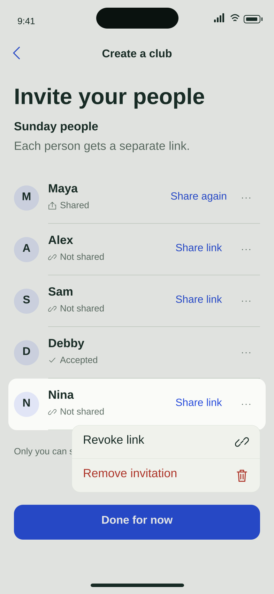
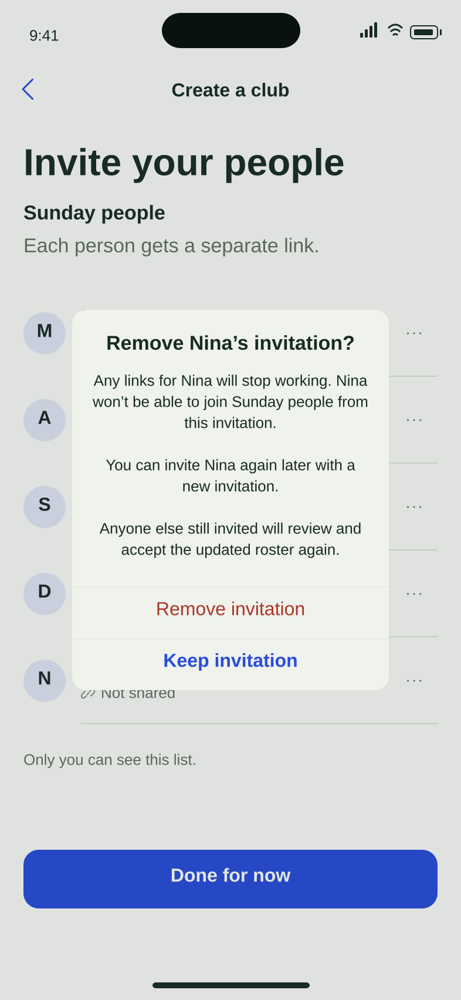
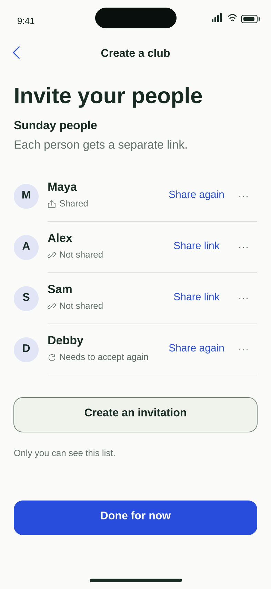
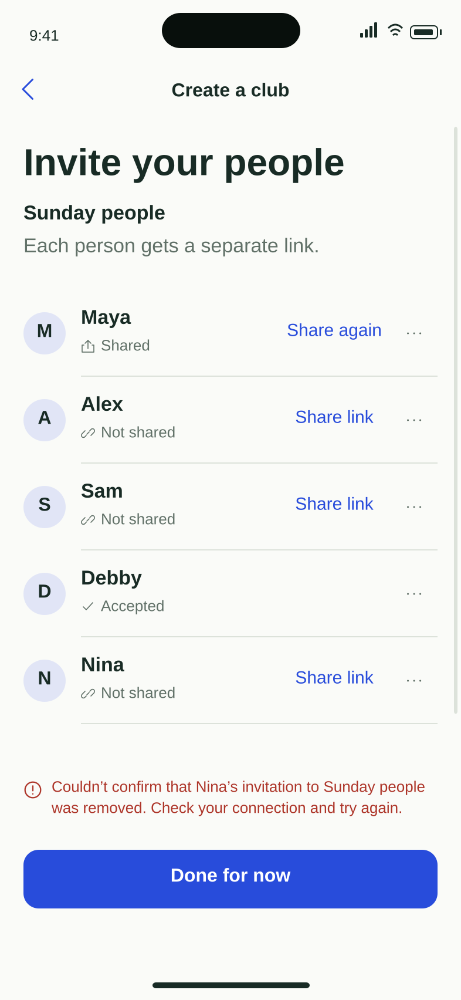
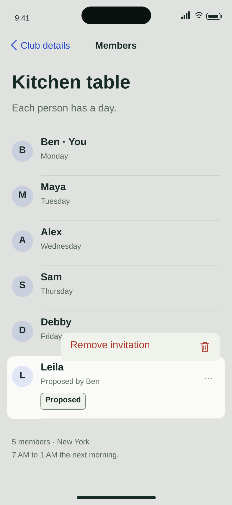
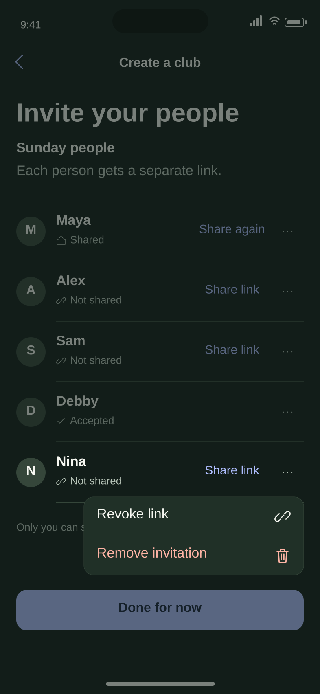
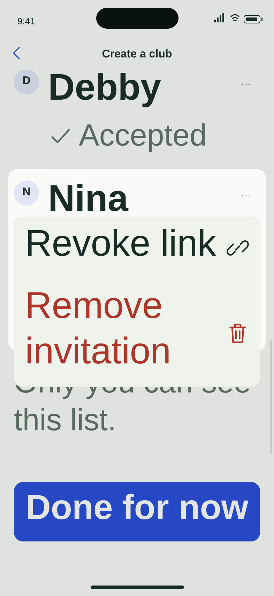
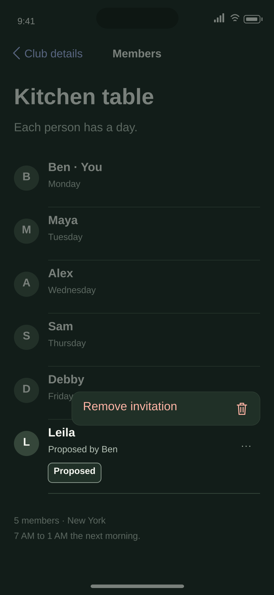
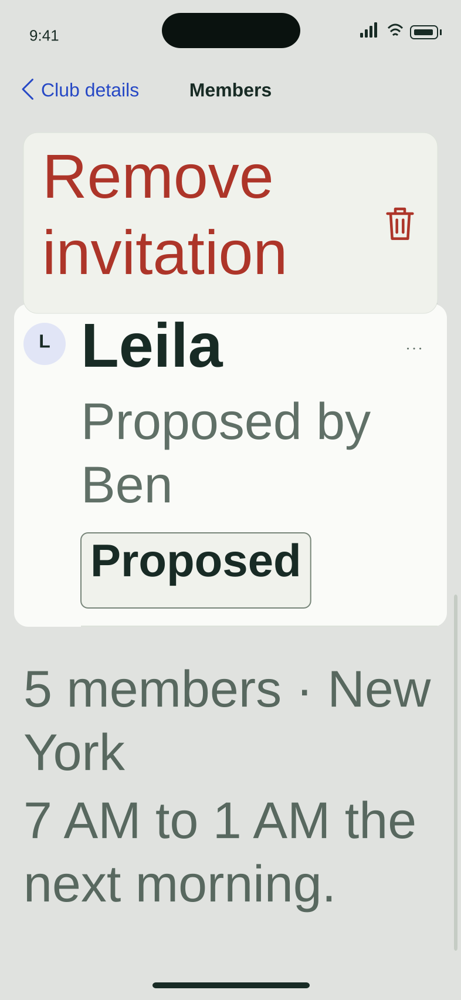

Stage B1: removing an invitation before joining. Nine requested frames, in order. Revoke link keeps the person’s place; Remove invitation ends it. Select a proof to open its portable SVG. These are static design references, not a working app.








